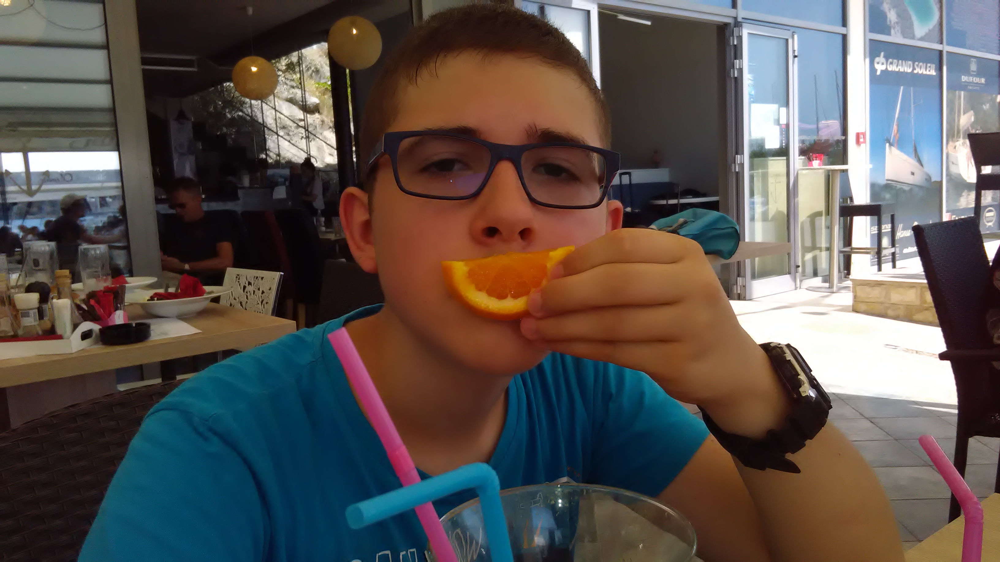

Balázs Bence

Magamról
A nevem Balázs Bence, 15 éves vagyok és Kistarcsán születtem. A BMSZC Neumann János Számítástechnikai Szakgimnáziumába járok, az általános 8 évet a Gyömrői Weöres Sándor Általános Iskolában végeztem . A szüleimmel élek, testvéreim nincsenek.
A kép egy régi Horvátországi nyaralásunkkor készült még körülbelül 2015-ben.
Lakhely
Gyömrőn lakok, ebben a kisvárosban Budapest mellett. Sok minden megtalálható itt, elég nyugodt település, egyszer a régi biológia tanárom "zöld város"-nak nevezte.
Sport
Első sportom a dzsúdó(cselgáncs) volt, ahova 1 évig jártam. Majd jött a vízilabda amit 4 esztendejig űztem.
Hobbiaim
Imádok videójátékokkal játszani, illetve filmeket és sorozatokat is gyakran nézek. A vitorlás hajózás is érdekel, legyen szó vakációról vagy a kadét iskoláról. Ha pedig éppen nincs kedvem a képernyőt bámulni, szivesen olvasok egy jó könyvet. Emellett hétvégente gyakran szoktam bringázni vagy kutyát sétáltatni.
A iskolában az angol és a programozás érdekel a legjobban, de szeretem a történelmet és a matekot is.